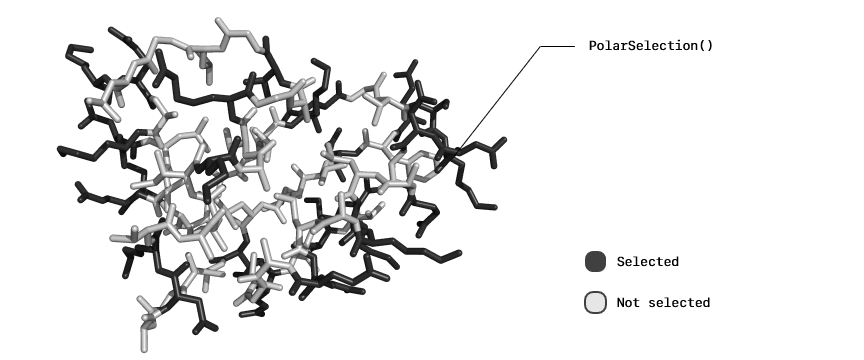

Selections
The Selections is a submodule of
ProtoSyn.Peptidesmodule. As such, the following section introduces both new types and methods that work together, in a generally independent way from the rest of the module, and require an unique exploratory section on their own.
As an expansion of the Core module Selections, this submodule introduces some protein specific AbstractSelection types:
ProteinSelectionPolarSelectionSidechainSelectionSecondaryStructureSelectionPhiSelectionPsiSelectionOmegaSelectionChiSelection
ProtoSyn.ProteinSelection — TypeProteinSelection()A ProteinSelection outputs a Mask of Residue instances where the protein aminoacids are marked as true. A known aminoacid is defined as having an entry both in ProtoSyn.three_2_one dictionary and in the default Peptides LGrammar.
State mode
The state mode of ProteinSelection M is forced to be Stateless
Selection type
The selection type of ProteinSelection T is forced to be Residue.
This selection does not have a short syntax version.
This selection is provided by the Peptides module but registered under ProtoSyn Core module, in order to directly accessible and merged with other AbstractSelection instances.
Examples
julia> ProteinSelection()
ProteinSelection › (Residue)ProtoSyn.PolarSelection — TypePolarSelection()A PolarSelection outputs a Mask of Residue instances where the polar aminoacids are marked as true (as defined in ProtoSyn.Peptides.polar_residues).
State mode
The state mode of PolarSelection M is forced to be Stateless
Selection type
The selection type of PolarSelection T is forced to be Residue.
This selection does not have a short syntax version.
This selection is provided by the Peptides module but registered under ProtoSyn Core module, in order to directly accessible and merged with other AbstractSelection instances.
Examples
julia> PolarSelection()
PolarSelection › (Residue)
Figure 1 | An example of a PolarSelection application.
ProtoSyn.SidechainSelection — TypeSidechainSelection()A SidechainSelection outputs a Mask of Atom instances where the sidechain atoms are marked as true (all atoms not named C, H, CA, N or O - marks caps as true).
State mode
The state mode of SidechainSelection M is forced to be Stateless
Selection type
The selection type of SidechainSelection T is forced to be Atom.
This selection does not have a short syntax version.
This selection is provided by the Peptides module but registered under ProtoSyn Core module, in order to directly accessible and merged with other AbstractSelection instances.
Examples
julia> SidechainSelection()
SidechainSelection › (Atom)
Figure 2 | An example of a SidechainSelection application.
ProtoSyn.SecondaryStructureSelection — TypeSecondaryStructureSelection(ss::Symbol, [threshold::Float64 = 0.87])A SecondaryStructureSelection outputs a Mask of Residue instances where the residues are marked as true if the current phi and psi dihedrals are within the threshold angular distance (in radians, 50° by default) of the reference values for the requested ss SecondaryStructure type.
State mode
The state mode of SidechainSelection M is forced to be Stateful.
Selection type
The selection type of SidechainSelection T is forced to be Residue.
Short syntax
- ss"helix" = Helix secondary structure
- ss"parallel_sheet" = Parallel beta sheet secondary structure
- ss"antiparallel_sheet" = Antiparallel beta sheet secondary structure
- ss"linear" = Linear secondary structure
This selection is provided by the Peptides module but registered under ProtoSyn Core module, in order to directly accessible and merged with other AbstractSelection instances.
Examples
julia> SecondaryStructureSelection(:parallel_sheet, deg2rad(20))
SecondaryStructureSelection › parallel_sheet (± 20.0°)
julia> ss"helix"
SecondaryStructureSelection › helix (± 50.0°)
Figure 3 | An example of a SecondaryStructureSelection application.
ProtoSyn.PhiSelection — TypePhiSelection()A PhiSelection outputs a Mask of Atom instances where the phi-controlling atoms are marked as true. Phi-controlling atoms are non upstream-terminal Atom instances named "C". (make sure the IUPAC naming conventions are respected, consider using assign_default_atom_names!) for renaming peptide structures into the default atom names).
State mode
The state mode of PhiSelection M is forced to be Stateless
Selection type
The selection type of PhiSelection T is forced to be Atom.
This selection is provided by the Peptides module but registered under ProtoSyn Core module, in order to directly accessible and merged with other AbstractSelection instances.
Examples
julia> PhiSelection()
PhiSelection › (Atom)ProtoSyn.PsiSelection — TypePsiSelection()A PsiSelection outputs a Mask of Atom instances where the psi-controlling atoms are marked as true. Psi-controlling atoms are non downstream-terminal Atom instances named "N". (make sure the IUPAC naming conventions are respected, consider using assign_default_atom_names!) for renaming peptide structures into the default atom names).
State mode
The state mode of PsiSelection M is forced to be Stateless
Selection type
The selection type of PsiSelection T is forced to be Atom.
This selection is provided by the Peptides module but registered under ProtoSyn Core module, in order to directly accessible and merged with other AbstractSelection instances.
Examples
julia> PsiSelection()
PsiSelection › (Atom)ProtoSyn.OmegaSelection — TypeOmegaSelection()An OmegaSelection outputs a Mask of Atom instances where the omega-controlling atoms are marked as true. Omega-controlling atoms are non upstream-terminal Atom instances named "CA". (make sure the IUPAC naming conventions are respected, consider using assign_default_atom_names!) for renaming peptide structures into the default atom names).
State mode
The state mode of OmegaSelection M is forced to be Stateless
Selection type
The selection type of OmegaSelection T is forced to be Atom.
This selection is provided by the Peptides module but registered under ProtoSyn Core module, in order to directly accessible and merged with other AbstractSelection instances.
Examples
julia> PsiSelection()
PsiSelection › (Atom)ProtoSyn.ChiSelection — TypeChiSelection(n::Union{Int, Vector{Int}})A ChiSelection outputs a Mask of Atom instances where the chi-controlling Atom instances of sidechain are marked as true (all atoms defined in Peptides.chi_dict, by name - make sure the IUPAC naming conventions are respected, consider using assign_default_atom_names!) for renaming peptide structures into the default atom names). this AbstractSelection selects the n-chi dihedral angles (chi1, chi2, chi3 or chi4). Optionally, a Vector{Int} can be provided, in wich case multiple chi-angles can be selected simultaneously.
State mode
The state mode of ChiSelection M is forced to be Stateless.
Selection type
The selection type of ChiSelection T is forced to be Atom.
Short syntax
- chi"..." = Chi angle
Using the short version syntax, it's possible to select multiple chi angles by using the 'r' flasg, as such: chi"1|2|3|4"r.
This selection is provided by the Peptides module but registered under ProtoSyn Core module, in order to directly accessible and merged with other AbstractSelection instances.
Examples
julia> ChiSelection(1)
ChiSelection (chi-1) › (Atom)
julia> ChiSelection([1, 2])
ChiSelection (chi-1 and chi-2) › (Atom)
julia> chi"1"
ChiSelection (chi-1) › (Atom)
julia> chi"1|2|3|4"r
ChiSelection (chi-1, chi-2, chi-3 and chi-4) › (Atom)